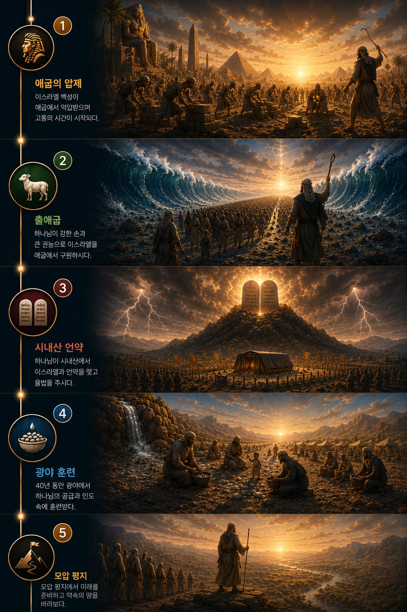

출애굽·광야 시대
구속받은 백성, 언약의 백성으로 세워지다
⛓
애굽압제 허브
🤝
구원준비
🐑
출애굽 허브
🐑
어린양의 흐름
⌖
주제탐험
📜
시내산 허브
🤝
언약의 흐름
▥
성막의 흐름
♟
제사장의 흐름
⌖
주제탐험
🍞
광야훈련 허브
👣
광야의 흐름
⌖
주제탐험
⛰
모압평지 허브
♛
하나님나라의 흐름
⌖
주제탐험
출애굽·광야 핵심흐름
압제
›
출애굽
›
언약
›
광야
›
모압
⌂
홈
◎
전체
▣
허브
‹
이전
›
정복시대
×